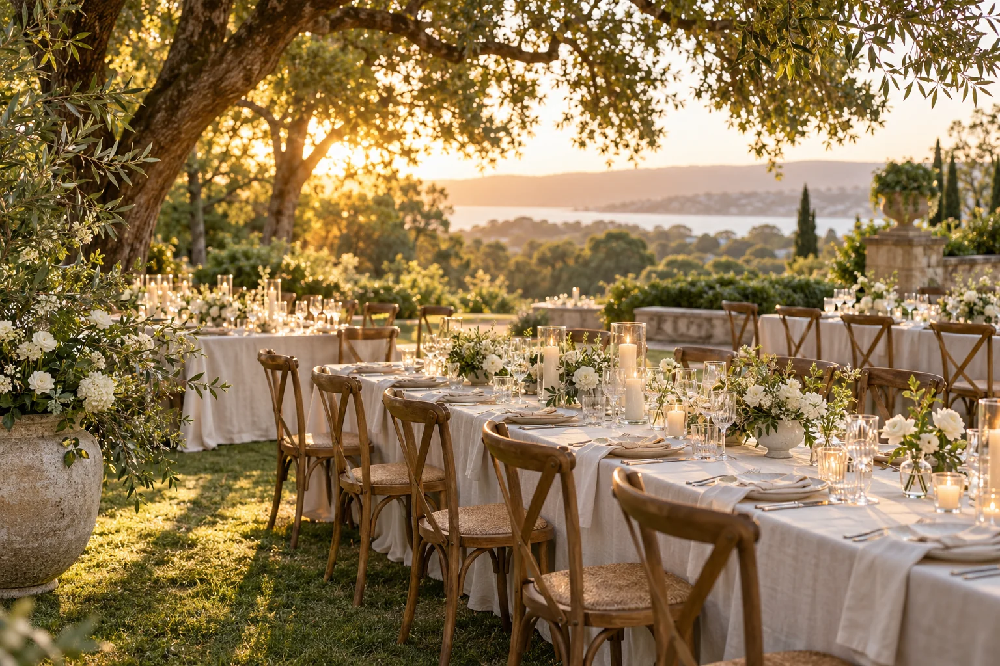

You do not need every answer on day one. Start with a few decisions that give the rest of your planning a shape.
Choose three priorities
Talk about what you each want the day to feel like. Write down three things that matter most: a generous meal, time with guests, a particular location or music you love. Revisit these when decisions become difficult.
Sketch the guest list
A rough guest count makes venue searching and budgeting more useful. Separate the people you definitely want there from the names still being discussed, and decide how you will handle plus-ones and children.
Set a comfortable budget
List confirmed contributions and the amount you want to spend yourselves. Leave room for unexpected costs. A budget is a decision-making tool, not a target you have to reach.

Choose a date range and setting
Look at a few dates or a season before committing to one day. Ask venues about capacity, access, inclusions and availability, then compare the total picture.
Book the foundations
Once the date and setting are settled, work through the suppliers essential to your plans. Keep quotes, questions and agreed details together, then build a checklist with realistic next steps.
MAKE IT YOURS